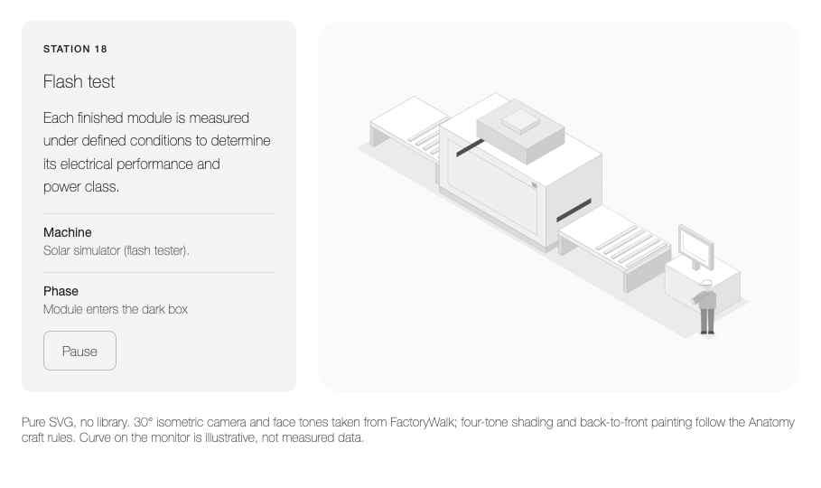
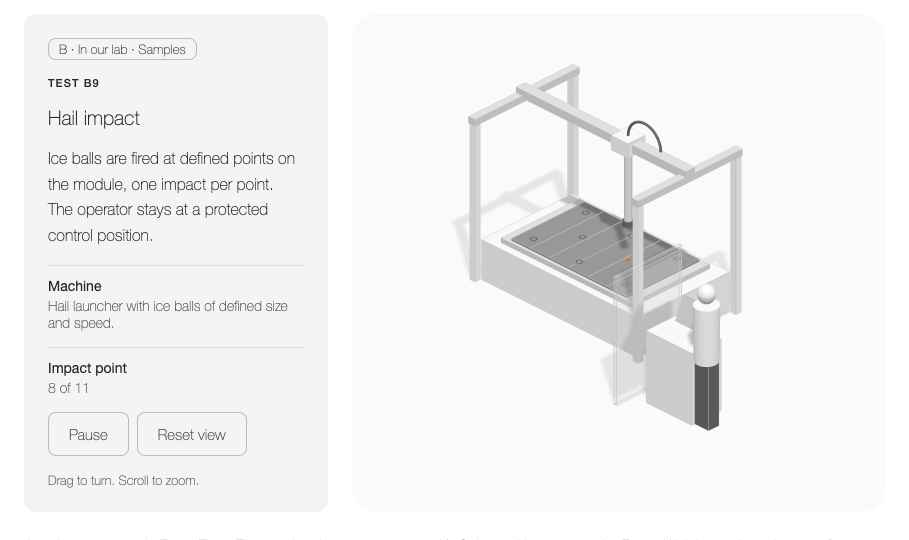

SVG for the line, 3D for the lab
Two working prototypes on the same camera, face tones and Design System. No station content, sequence or description was changed. Nothing has been applied to FactoryWalk yet.

A · Flash test · SVG isometric Infeed, dark box with lamp housing, outfeed, control desk with I–V curve, operator. Module runs through, flash, curve draws.
B · Hail impact · orthographic 3D Gantry moves the launcher over 11 points, laser spot, ice ball, impact marks, guard screen and console. Drag to turn.Comparison
{{ r.k }}
A · SVG{{ r.a }}
B · 3D{{ r.b }}
Existing architecture
Pages are Design Components without a bundler or npm. FactoryWalk already has its own isometric SVG engine (30° camera, three face tones, painter order, people, robots) driven by factory-walk-data.js. Colours and type come from colors_and_type.css. Any library that needs npm and a build step can only run here through an ES module CDN, or in Raja's production build.
Repositories
{{ r.n }}
{{ r.v }}
{{ r.t }}
Recommended stack
{{ s.k }}{{ s.v }}
Implementation plan
- {{ p }}